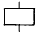
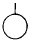
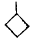
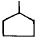
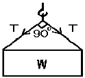

건설안전산업기사 (2002-09-08 기출문제)
1과목: 산업안전관리론
1. 기계 및 재료에 대한 검사시 파괴검사에 해당되는 것은?
- 육안검사
- 인장검사
- 초음파검사
- 자기검사
(정답률: 55%)

2. 어느 사업장에 연천인율이 8.2이었다. 도수율은?
- 2.41
- 3.42
- 4.53
- 5.44
(정답률: 44%)
3. 무재해 운동을 추진하기 위한 3요소가 아닌 것은?
- 안전 활동의 라인화.
- 직장(소집단)의 자주 활동의 활성화.
- 전 종업원의 안전 요원화.
- 최고경영자의 무재해, 무질병에 대한 확고한 경영 자세.
(정답률: 62%)
4. 안전관리규정에 포함되어야할 내용이 아닌 것은?
- 안전표지
- 보호구 관리
- 재해코스트 분석방법
- 사고 및 재해에 대한 조치
(정답률: 64%)
5. 하인리히의 사고방지 기본원리 중 제1단계(안전조직)내용과 관계가 적은 것은?
- 경영자의 안전목표 설정
- 안전관리자의 선임
- 안전 활동방침및 계획수립
- 안전수칙및 보호구의 적합성 판단
(정답률: 63%)
6. 작업장에서 가장 높은 비율을 차지하는 사고원인은?
- 작업방법
- 작업환경
- 시설장비의 결함
- 근로자의 불안전한행동
(정답률: 63%)
7. 인간의 동기부여에 관한 맥그리거의 X이론에 해당되지 않는 것은?
- 인간은 스스로 자기목표에 대하여 자기통제를 한다.
- 인간은 본래 일을 싫어하며 피하려고 한다.
- 인간은 명령받는 것을 좋아하며 책임회피를 좋아한다
- 동기는 생리적 수준 및 안정의 수준에서 나타난다.
(정답률: 43%)
8. 마슬로우의 욕구 5단계 이론 중 마지막의 욕구단계는?
- 존경과 긍지에 대한 욕구
- 자아실현의 욕구
- 안전에 대한 욕구
- 애정적인 욕구
(정답률: 63%)
9. 다음 안전관리 조직 중 가장 이상적인 조직 형태는?
- 직계형 조직
- 직능전문화 조직
- 라인스태프형 조직
- 타스크포스(task-force)조직
(정답률: 79%)
10. 다음 중 생체리듬의 종류에 속하지 않는 것은?
- 육체적리듬
- 지성적리듬
- 감정적리듬
- 정서적리듬
(정답률: 17%)
11. 문제해결 방법은 다음 4가지 관리조건 중 어느 단계에 속하는가?
- 관찰단계
- 분석단계
- 시행단계
- 계획단계
(정답률: 7%)
12. 작업의 종류나 내용에 따라 교육범위나 정도가 달라지는 이론 교육 방법은?
- 지식교육
- 정신교육
- 태도교육
- 기능교육
(정답률: 53%)
13. 안전교육 중 CCS(civil communication section)이라고도 하며, 당초에는 일부 회사의 톱매니지먼트에 대해서만 행하여졌던 것이 널리 보급된 것은?
- TWI
- MTP
- ATP
- ATT
(정답률: 36%)
14. 태도에 관한 교육훈련의 효과 측정방법으로 가장 많이 쓰이는 방법은?
- 면접
- 노트의 관찰
- 평가시험
- 테스트
(정답률: 64%)
15. 핼멧형의 용접면 치수가 투시부에서 눈까지 거리는 얼마로 규정하고 있는가?
- 35㎜이상
- 35㎜미만
- 38㎜이상
- 38㎜미만
(정답률: 41%)
16. 다음의 직업적성검사를 설명한 내용중 틀린 것은?
- 직업적성은 직업에 대한 장래의 가능성을 나타낸다.
- 적성검사는 소질적 능력을 검사한다.
- 직업적성은 특정직업에 대한 적성이다.
- 직업적성은 특정직종에 대한 적성이다.
(정답률: 46%)
17. Thorndike의 시행착오 학습에서 문제상자안에 굶주린 고양이를 넣은 것은 다음중 어느것과 관련성이 있는가?
- 효과의 법칙
- 연습의 법칙
- 특별한 의미가 없음
- 준비성의 법칙
(정답률: 31%)
18. 다음 중 인지(cognition)학습에 관한 설명이 가장 알맞은 것은?
- 근로자가 반복경험을 통해서 안전모착용을 습관화 하였다.
- 상,벌제도를 이용하여 근로자가 보호장구 착용을 잘 하도록 지도하였다.
- 모범적으로 보호장구착용을 잘하는 근로자를 포상하여 이를 통해 다른 근로자가 보호구 착용을 잘하도록 유도하였다.
- 보호구의 중요성을 전혀 인식하지 못하는 근로자를 교육을 통해 의식을 전환시켜 보호구 착용을 습관화 하도록 하였다.
(정답률: 48%)
19. 산업 재해 발생 형태에 포함되지 않는 것은?
- 집중형
- 연쇄형
- 복합형
- 독립형
(정답률: 45%)
20. 안전모의 착장체 구성요소에 해당되지 않는 것은?
- 턱끈
- 머리받침끈
- 머리고정대
- 머리받침고리
(정답률: 50%)
2과목: 인간공학 및 시스템안전공학
21. 조종장치의 식별에 이용되는 촉각적 암호화 방법이 아닌 것은?
- 형상 암호화
- 표면촉감 암호화
- 크기 암호화
- 전기적 암호화
(정답률: 68%)
22. 인간공학에 사용되는 인간기준(human criteria)의 4가지 유형에 포함되지 않는 것은?
- 사고빈도
- 주관적 반응
- 생리학적 지표
- 심리적 지표
(정답률: 6%)
23. 기업의 의사결정과 같은 손실과 이익의 기회가 공존하고 위험의 부담을 보험 등으로 전가할 수 없는 위험을 무엇이라 하는가?
- 정적위험
- 동적위험
- 손익분기점 위험
- 무보험 위험
(정답률: 22%)
24. 침대의 길이를 설계 할때 인체 계측자료의 어느 원칙을 응용하는 것이 적절한가?
- 최대 집단치를 위한 설계
- 최소 집단치를 위한 설계
- 조절 범위
- 평균치를 기준으로한 설계
(정답률: 41%)
25. 위험을 통제하는데 있어 취해야 할 첫단계 조사는?
- 작업원을 선발하여 훈련한다.
- 덮개나 격리등으로 위험을 방호한다.
- 설계 및 공정계획시에 위험을 제거하도록 한다
- 점검과 필요한 안전보호구를 설치하도록 한다.
(정답률: 35%)
26. 안전성 평가를 위한 방법에 이용되지 않는 것은?
- 체크리스트
- FMEA
- FTA
- Decision Tree
(정답률: 56%)
27. 역치(threshold value)의 설명중 올바른 것은?
- 시각의 역치는 300-700nm이며 이는 감각에 필요한 최소량의 에너지를 말한다.
- 에너지의 양이 증가할수록 차이식역치는 감소한다.
- 표시장치를 설계할 때는 신호의 강도를 역치이하로 설계하여야 한다.
- 표시장치의 설계와 역치는 아무런 관계가 없다.
(정답률: 8%)
28. 안전관리부서 역할 중 산업재해 방지 역할에 속하지 않는 것은?
- 재해통계의 작성분석
- 안전점검 추진 실시
- 안전기준 지침작성 및 실시
- 화재예방 시스템 설계검토
(정답률: 20%)
29. 사용기간 t에 대한 신뢰도가 각각 e-t,e-3t 인 부품이 하나씩 연결된 기기를 사용하는데 부품 2개중 어느 한가지만이라도 작동상태에 있어도 되는 시스템이라면 사용기간 t에 대한 기기의 신뢰도 R(t)는?
- R(t) = ( e-t) (e-3t)
- R(t) =1 - ( e-t) (e-3t)
- R(t) = (1 - e-t) (1 - e-3t)
- R(t) =1 - (1 - e-t) (1 - e-3t)
(정답률: 40%)
30. 현장중심의 사용하기 쉬운 설계에 해당되는 사항이 아닌것은?
- 코드설계
- 출력설계
- 입력설계
- 파일설계
(정답률: 30%)
31. 휘광이 시지각에 미치는 영향은?
- 휘도의 향상
- 가시도와 대비의 저하
- 가시도와 시성능의 저하
- 가시도와 시성능의 향상
(정답률: 38%)
32. 산업재해예방에 필요한 인간실수 예방기법이 아닌 것은?
- FMEA
- 작업상황 개선
- 요원변경
- 체계의 영향감소
(정답률: 20%)
33. 부품간의 연결장치가 전선, 도관, 지레 등이 제어회로를 이루는 기계체계는 다음중 어느 것인가?
- 수동체계
- 자동체계
- 기계화체계
- 반자동체계
(정답률: 30%)
34. 제어장치에서 제어장치의 변위를 2cm 움직였을 때 표시계의 지침이 8cm 움직였다면 이 기기의 통제/표시비(C/D)는 얼마인가?
- 0.6
- 0.20
- 0.25
- 4.0
(정답률: 54%)
35. FAFR(Fatality Accident Frequency Rate)은 일정한 업무 또는 행위에 직접 노출된 몇 시간당 사망 확률을 나타내는가?
- 106 시간
- 107 시간
- 108 시간
- 109 시간
(정답률: 22%)
36. 다음 FMEA의 특징을 설명한 것 중 틀린 것은?
- 각 요소가 영향의 해석이 쉬우므로 동시에 2 가지 이상의 요소가 고장이 나는 경우에도 더욱 해석이 쉽다.
- 양식이 간단하고 비교적 적은 노력으로 특별한 훈련없이 해석이 가능하다.
- 해석의 영역이 물체에 한정되기 때문에 인적 원인의 해명이 곤란하다.
- 서브시스템의 분석 경우 FMEA보다 FTA를 하는 것이 더 실제적인 방법이다.
(정답률: 25%)
37. Energy대사율인 R.M.R(Relative Metabolic Rate)에 대한 설명중 틀린 것은?
- 작업대사량 = 작업시 소비 에너지-안정시 소비에너지
- R.M.R = 작업대사량 ÷ 기초대사량
- 산소의 소모량을 측정키 위한 용기는 더글라스백(Douglas Bag)을 이용한다.
- 기초대사량은 의자에 앉아서 호흡하는 동안에 소비한 산소의 소비량으로 측정한다.
(정답률: 60%)
38. 진전(Tremer)과 표동(drift)이 문제가 되는 동작은?
- 반복동작
- 계속동작
- 계열동작
- 정지동작
(정답률: 15%)
39. FTA에 사용되는 기호 중 비전개사항을 나타낸 기호는?




(정답률: 32%)
40. 인간관계가 작업 및 작업 공간 설계에 못지 않게 생산성에 큰 영향을 끼친다는 것을 암시하는것을 무엇이라 하는가?
- 인간욕구 5단계
- X, Y 이론
- 인적자원개발효과
- 호손효과
(정답률: 48%)
3과목: 건설시공학
41. 내외관을 소정의 깊이까지 박은 후에 내관을 빼낸 후, 외관에 콘크리트를 부어 넣어 지중에 콘크리트 말뚝을 형성시키는 파일(Pile)의 명칭은?
- 심플렉스 파일(Simplex Pile)
- 콤프레솔 파일(Compressol Pile)
- 페데스탈 파일(Pedestal Pile)
- 레이몬드 파일(Raymond Pile)
(정답률: 34%)
42. 흙막이공사에 사용하는 지중연속벽에 대한 설명으로 적당하지 않은 것은?
- 시공시 소음, 진동이 크다.
- 지수성이 우수하여 지하수가 많은 지반에서도 사용할 수 있다.
- 다른 흙막이공사에 비해 공사비가 많다.
- 강도, 강성이 우수하여 흙막이 변형이 적다.
(정답률: 25%)
43. AE 콘크리트에 관한 기술 중 옳지 않은 것은?
- AE제는 계량의 정확을 기하기 위하여 희석액으로 하여 사용한다.
- 공기량이 많을수록 slump는 감소된다.
- 공기량은 온도가 높을수록 감소한다.
- 시공하는 동안은 공기량을 air-meter로 항상 측정하여 소정의 공기량을 갖도록 유의한다.
(정답률: 64%)
44. 철골공사에서 직경 16mm 이상의 현장 리벳치기의 가열 온도로 적당한 것은?
- 500℃
- 800℃
- 1300℃
- 1500℃
(정답률: 25%)
45. 거푸집설계시 고려사항으로 가장 거리가 먼 것은?
- 콘크리트의 측압
- 콘크리트 시공시의 하중
- 콘크리트 시공시의 충격과 진동
- 콘크리트 시공시의 온도
(정답률: 53%)
46. 건축공사의 착수시 대지에 설정하는 기준점에 대한 설명으로 옳지 않은 것은?
- 공사중에 건축물 각 부위의 높이에 대한 기준을 삼고자 설정하는 것을 말한다.
- 건물의 그라운드 라인(Ground line)은 현장에서 공사 착수시에 설정한다.
- 기준점은 바라보기 좋고, 공사에 지장이 없는 곳에 설정한다.
- 기준점은 대개 지정 지반면에서 0.5∼1m의 위치에 두고 그 높이를 적어둔다.
(정답률: 52%)
47. 모르타르 혹은 콘크리트를 호스를 사용하여 압축공기로 시공면에 뿜는 공법으로 옳은 것은?
- 프리팩트공법
- 진공탈수공법
- 숏크리트공법
- 슬립폼공법
(정답률: 40%)
48. 철골공사에서 용접결함에 관한 사항이 아닌 것은?
- 오버랩
- 언더컷
- 블로우홀
- 스켈롭
(정답률: 59%)
49. 응결ㆍ경화촉진제로 사용되는 염화 칼슘을 혼입한 콘크리트의 특징으로 옳지 않은 것은?
- 적정량을 사용하면 마모에 대한 저항성이 커진다.
- 건습에 대한 팽창ㆍ수축이 작아진다.
- 황산염에 대한 저항성이 커진다.
- 알카리 골재반응을 촉진시킨다.
(정답률: 16%)
50. 공업화 공법(PC공법)에 의한 콘크리트 공사의 특징과 관련이 없는 것은?
- 프리패브 공법이기 때문에 현장에서의 공정이 단축된다.
- 천후ㆍ기상의 영향을 덜 받는다.
- 현장에서의 노무가 감소된다.
- 품질의 균질성을 기대하기 어렵다.
(정답률: 55%)
51. 아일랜드공법과 역순으로 흙파기 공사를 하는 것은?
- 오픈 컷(OPEN CUT)공법
- 트렌치 컷(TRENCH CUT)공법
- 케이슨(CAISSON)공법
- 개방잠함(OPEN CAISSON)공법
(정답률: 59%)
52. 연약한 지반을 굴착할 때 기초저면 부분이 부풀어 오르고, 흙막이 지보공을 파괴시켜 붕괴하는 현상은?
- 파이핑(piping)
- 보일링(Boiling)
- 히이빙(Heaving)
- 캠 버(Camber)
(정답률: 57%)
53. 공동도급(JOINT VENTURE)방식의 특징이 아닌 것은?
- 손익분담의 공동계산 - 위험분산
- 시공의 불확실성 - 각 회사의 이익만 추구
- 단일목적성 - 특정공사
- 일시성 - 특정공사 완료시 해체
(정답률: 27%)
54. 콘크리트 공사에서 세퍼레이터(separater)를 사용하는 목적으로 옳은 것은?
- 거푸집과 거푸집의 간격을 바르게 유지하고 변형을 막아준다.
- 철근의 간격을 바르게 유지한다.
- 거푸집이 벌어지지 않게 하기 위해 사용된다.
- 거푸집 제거를 편리하게 하기 위해 사용한다.
(정답률: 50%)
55. 다음 용어 중 토질시험과 가장 관계가 적은 것은?
- 조립률
- 간극비
- 함수비
- 일축압축시험
(정답률: 16%)
56. 말뚝박기 간격에 대한 설명 중 옳지 않은 것은?
- 최소 말뚝중심 간격은 말뚝끝 마구리 지름의 2.5배 이상
- 기초판 끝과 말뚝중심과의 거리는 1.5배 이상
- 나무말뚝의 최소 말뚝중심 간격은 60㎝ 이상
- 제자리 콘크리트 말뚝의 최소 말뚝 중심간격은 90㎝ 이상
(정답률: 33%)
57. 현장에서 공무적 현장관리가 아닌 것은?
- 자재관리
- 노무관리
- 위험 및 재해방지
- 공정표작성
(정답률: 31%)
58. 파내기 경사각이 가장 큰 지반은 어느 것인가?
- 습윤모래
- 일반자갈
- 건조 진흙
- 건조한 보통흙
(정답률: 53%)
59. 1956년 미국의 듀퐁사가 신규설비 및 투자자금의 효율적 사용을 위해 개발한 공정관리기법은?
- PERT기법
- CPM기법
- LOB기법
- 바챠트기법
(정답률: 32%)
60. 프리팩트파일의 일종으로 지중에 스크류 오거를 삽입하여 소정의 깊이까지 굴착한 후 흙과 오거를 뽑아 올리면서 오거 중심부에 있는 선단을 통하여 모르타르나 콩자갈 콘크리트를 주입하여 말뚝을 만드는 공법은?
- PIP
- MIP
- CIP
- RCD
(정답률: 22%)
4과목: 건설재료학
61. 목재에 관한 설명 중 옳지 않은 것은?
- 목재의 열전도율은 비중이 크고 함수율이 증가함에 따라 증가한다.
- 생재를 건조하면 건조시점부터 서서히 수축이 생긴다.
- 연륜에 직각으로 제재하면 곧은결 무늬가 나타난다.
- 변재는 심재보다 수축이 크다.
(정답률: 20%)
62. 아스팔트방수를 시멘트 액체방수와 비교한 기술 중 옳지 않은 것은?
- 시공이 번잡하다.
- 공기(工期)가 짧다.
- 보수가 불편하다.
- 내구성이 크다.
(정답률: 15%)
63. 유리의 성질에 관한 설명 중 틀린것은?
- 창유리의 강도는 휨강도를 말한다.
- 열선 반사유리는 판유리 표면에 금속피막을 입힌 것이다.
- 보통유리의 열전도율은 콘크리트보다 약간 크다.
- 방탄유리는 강화유리를 합유리화한 것이다.
(정답률: 44%)
64. 알루미늄에 대한 설명 중 옳지 않은 것은?
- 반사율이 극히 크므로 열차단재로 쓰인다.
- 연질이기 때문에 손상되기 쉽다.
- 내화성이 적고 열팽창이 크다.
- 산과 알칼리에 대한 내성이 강한 편이다.
(정답률: 32%)
65. 점토제품의 종류 중 가장 고온으로 소성되고 흡수율이 적으며 위생도기, 타일 등으로 이용되는 것은?
- 토기
- 자기
- 도기
- 석기
(정답률: 47%)
66. 콘크리트 타설후 블리딩 및 침하에 대한 설명 중 옳지 않은 것은?
- 물시멘트비가 클 때 블리딩 현상 및 침하가 크다.
- A.E 콘크리트는 보통콘크리트에 비하여 블리딩 현상 및 침하량이 적다.
- 블리딩 현상에 의해 떠오른 미립물이 침적된 것을 레이턴스라 한다.
- 블리딩과 침하는 단위수량이 적을수록 심해진다.
(정답률: 32%)
67. 석재 중에서 내화도가 가장 큰 것은?
- 석회암
- 대리석
- 트래버틴
- 응회석
(정답률: 39%)
68. 석재에 관한 기술 중 틀린 것은?
- 석재는 비중이 클수록 강도가 크다.
- 대리석은 아황산이나 탄산가스를 포함한 우수에 침식 당한다.
- 석재는 흡수율이 큰 것일수록 강도가 낮고 공극이 크다.
- 화강암은 내화성과 내구성이 모두 우수한 재료이다.
(정답률: 43%)
69. 목재 이음부 긴결시 볼트와 함께 사용되어 주로 전단력에 저항하는 금속제품은?
- 꺽쇠
- 띠쇠
- 안장쇠
- 듀벨
(정답률: 35%)
70. 프리팩트 콘크리트(prepacked concrete)의 특징에 해당되지 않은 항목은?
- 초기강도가 높다.
- 시멘트가 절약된다.
- 건조수축률이 감소된다.
- 동결.융해에 대한 내성이 크다.
(정답률: 18%)
71. 콘크리트의 시공연도 시험방법과 관련없는 것은?
- 슬럼프시험
- 플로우시험
- 체가름시험
- 리몰딩시험
(정답률: 42%)
72. 생석회와 규사를 혼합하여 고온, 고압하에서 양생하면 수열반응을 일으킨다. 여기에 알루미늄 분말 등의 발포제를 혼합하면 경량화된 강도가 크고 수축이 적은 벽돌, 대형판 등의 제품을 만들 수 있다. 이 제품의 이름은?
- A.L.C
- VACKY
- 흄관
- 플렉시블보오드
(정답률: 57%)
73. 목재의 열에 대한 성질 중 옳지 않은 것은?
- 목재의 평균 인화점 온도는 240℃ 정도이다.
- 수분이 많을수록 열전도율이 높다.
- 목재의 평균 발화점 온도는 600℃ 정도이다.
- 목재는 100℃ 이상에서 일산화탄소, 메탄, 수소 등의 가연성가스를 발생한다.
(정답률: 20%)
74. 일정한 하중을 장기간 작용시킨 채로 두면 하중을 늘리지 않아도 천천히 변형이 진행하는데 이와 같은 현상을 말하는 것은?
- 정적강도
- 피로
- 크리프
- 인성
(정답률: 48%)
75. 건축재료에 관한 기술 중 틀린 것은?
- 목재의 섬유포화점은 함수율 30% 정도이다.
- 점토제품에서 SK표시는 소성온도를 의미한다.
- 콘크리트제품은 산성을 띠며 이것은 수산화칼슘 때문이다.
- 수성페인트는 내알카리성 및 내수성이 좋으며 희석재로서 물을 사용하므로 독성 및 화재발생 위험이 없다
(정답률: 24%)
76. 연(鉛)의 화학적 성질 중 잘못 설명한 것은?
- 염산, 황산에는 침해되고 묽은 질산에는 녹지 않는다
- 알칼리에 약하며 콘크리트와 접촉되는 곳은 아스팔트 등으로 보호한다.
- 공기 중에는 습기와 CO2에 의하여 표면에 PbCO3 등이 생겨 내부를 보호한다.
- 연을 가열하면 황색의 리사지라 불리우는 PbO 가 되고 다시 가열하면 광명단이 된다.
(정답률: 15%)
77. 물시멘트비가 50%일때 시멘트 10포를 쓴 콘크리트에 필요한 물의 량으로 적당한 것은?
- 150ℓ
- 200ℓ
- 250ℓ
- 300ℓ
(정답률: 50%)
78. 다음 재료중 비강도(比强度)가 가장 큰 것은?
- 소나무
- 강철
- 콘크리트
- 화강석
(정답률: 40%)
79. 클링커타일은 다음 어느 곳에 많이 쓰이는가?
- 건물의 내벽
- 화장실 내벽
- 건물의 외부 바닥
- 화학실험실 바닥
(정답률: 18%)
80. 합성수지 중 가장 투명도가 큰 것은?
- 페놀수지
- 네오플렌수지
- A.B.S수지
- 메타크릴수지
(정답률: 19%)
5과목: 건설안전기술
81. 구축물 또는 이와 유사한 시설물 등에서 붕괴, 전도, 도괴, 폭발하는 등의 위험을 방지하기 위한 조치에 해당되지 않는 것은?
- 구축물 또는 이와 유사한 시설물의 설계서에 따른 시공여부 확인
- 구축물 또는 이와 유사한 시설물의 시공시 건설공사 시방서에 따른 시공여부 확인
- 건축물의 구조기준 등에 관한 규칙의 규정에 의한 구조기준 준수여부 확인
- 기타 건교부장관이 고시하는 사항에 대한 조치 확인
(정답률: 40%)
82. 다음 건설재료의 구분 중 유기질 재료에 해당되지 않는 것은?
- 콜타르
- 합성고무
- 아스팔트
- 시멘트
(정답률: 43%)
83. 달비계의 조립 및 해체 작업시 안전사항 중 맞지 않는 것은 것은?
- 관계자외 출입금지하고 그 내용을 보기 쉬운 장소에 게시한다.
- 작업시기,범위 및 절차를 작업근로자에게 주지시킨다
- 비계재료의 연결, 해체작업을 할 때는 폭30cm이상 발판을 설치한다.
- 작업근로자에게 안전대를 사용하도록하여 추락방지를 위한 조치를 한다.
(정답률: 56%)
84. 그림과 같이 무게 500kg의 화물을 인양하려고 한다. 이때 와이어로우프 1가닥에 작용되는 장력은?

- 177kg
- 260kg
- 354kg
- 433kg
(정답률: 41%)
85. 다음은 건설안전의 위험성에 대한 예측 설명이다. 옳지 않은 것은?
- 과거의 경험
- 정보의 수집
- 측정 및 관측
- 구성기준의 준수
(정답률: 35%)
86. 아스팔트 포장도로의 파쇄굴착 또는 암석제거에 적절한 장비는?
- 스크레이퍼(Scraper)
- 로울러(Roller)
- 리퍼(Ripper)
- 드래그라인(Dragline)
(정답률: 48%)
87. 다음 중 스크레이퍼의 용도에 해당되지 않는 것은 어느 것인가?
- 토사 다짐
- 토사 하역
- 토사 굴착
- 토사 운반
(정답률: 25%)
88. 수직갱에 가설된 통로의 길이가 15m 이상인 때에는 매 10m 마다 다음중 무엇을 설치해야 하는가?
- 답단
- 계단참
- 가설통로
- 활지조치
(정답률: 63%)
89. 다음 중 작업환경측정 대상작업에 해당되지 않는 것은?
- 잠함내 작업
- 터널내 작업
- 채석 작업
- 산소결핍 작업
(정답률: 32%)
90. 강관비계의 기둥간의 적재하중은 얼마이내로 제한하여야 하는가?
- 200kg
- 400kg
- 600kg
- 800kg
(정답률: 15%)
91. 달비계용 와이어로우프에 50kg 의 하중을 재하하고자 할때 와이어로우프의 허용하중은 얼마인가?
- 1000kg
- 700kg
- 500kg
- 300kg
(정답률: 39%)
92. 콘크리트를 타설할 때 거푸집에 작용하는 측압의 크기에 관한 다음 설명 중 적당하지 않은 것은?
- 콘크리트의 타설속도가 빠를수록 측압이 커진다.
- 콘크리트의 타설시 온도가 높을수록 측압이 커진다.
- 콘크리트의 슬럼프값이 클수록 측압이 커진다.
- 진동기로 콘크리트를 다지면 측압이 커진다.
(정답률: 46%)
93. 비계의 안전사항에 대한 설명으로 틀린 것은?
- 사용재료는 손상, 변형, 부식 등이 되지 않은 것이어야 한다.
- 비계의 구조 및 재료에 따른 평균 적재하중을 초과하지 않아야 한다.
- 부재의 접속부, 교차부는 확실하게 연결해야 한다.
- 폭풍, 폭우 후에는 손상여부와 각 부분의 연결상태를 점검해야 한다.
(정답률: 35%)
94. 추락사고를 예방하기 위한 방지대책으로 틀린 것은?
- 안전담당자를 지정하여 지도ㆍ감독
- 안전대 착용 및 추락방지망 설치
- 작업대나 비계에 작업발판과 난간대 설치
- 높이 3미터 이상인 장소에서 악천후로 인하여 위험이 예상될 때 당해 작업을 중지
(정답률: 29%)
95. 추락방지망 사용제한 사항으로 틀린 것은?
- 강도가 명확한 것
- 파손한 부분을 보수하지 않은 것
- 망사가 규정한 강도를 보유하지 않는 것
- 인체 또는 이와 동등 이상의 무게를 갖는 낙하물에 대해 충격을 받은 것
(정답률: 53%)
96. 다음 중 가설공사에 해당되지 않는 것은?
- 비계설치
- 규준틀 설치
- 콘크리트 타설
- 현장사무실 축조
(정답률: 27%)
97. 기초공사에서 안전조건이 아닌 것은?
- 균등침하조건
- 구조물을 안전하게 지지하는 조건
- 내구성 조건
- 어느 정도 부동침하를 허용하는 조건
(정답률: 67%)
98. 추락재해 방지설비로 사용되는 것이 아닌 것은?
- 작업발판
- 버팀대
- 안전대
- 안전망
(정답률: 32%)
99. 다음중 이동식 크레인 또는 크레인의 부적격한 와이어로프의 사용금지 사항 중 틀린것은?
- 이음매가 있는것.
- 와이어 로프의 한가닥에서 소선의 수가 7%이상 절단된 것.
- 지름의 감소가 공칭지름의 7%를 초과하는것.
- 꼬인것.
(정답률: 32%)
100. 중량물을 취급하는 작업을 하는 때에 작업계획서를 작성해야 하는데 포함할 사항으로 틀린 것은?
- 취급방법 및 순서
- 중량물의 종류 및 형상
- 작업장소의 넓이 및 지형
- 운행경로 및 작업방법
(정답률: 24%)